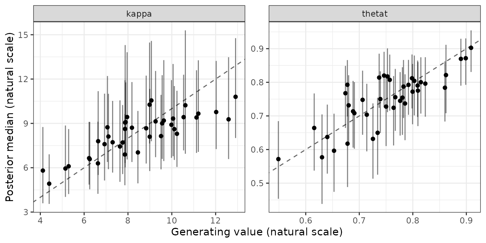
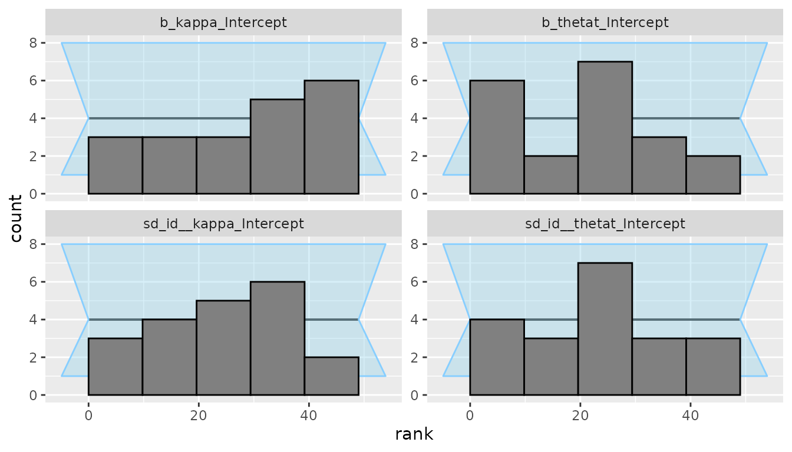
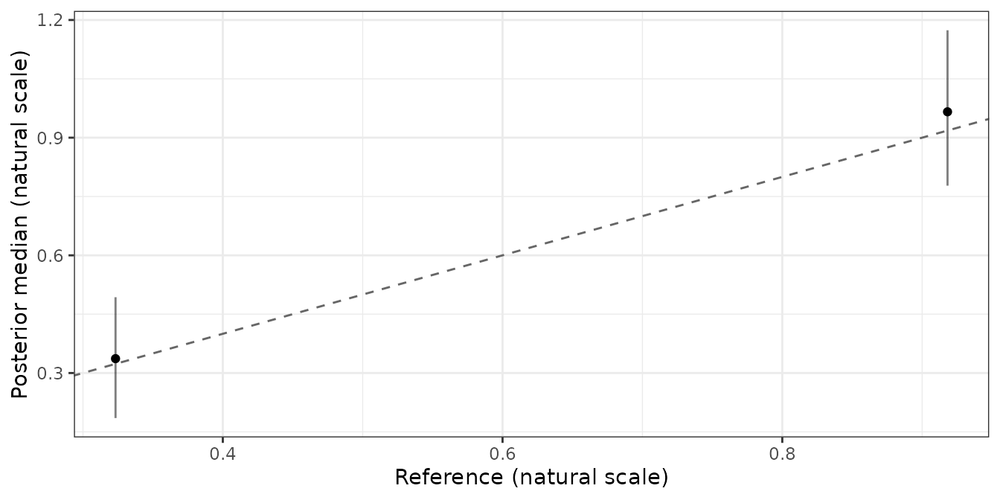

This article walks once through the loop every bmmtools check is built on: simulate data from known parameters, fit the model, score the fit against the truth. It uses one model and one design, so that each step is visible. Running a recovery study repeats the same loop over a design grid.
The second half asks the three other questions a new model has to
answer. prior_check() asks what the priors imply before any
data are fitted, sbc() whether the implementation is
correct, and cross_check() whether the model agrees with
what is already known. Only the scorer changes; the loop is the same
one.
The model is bmm’s two-parameter mixture model,
mixture2p, because an adapter for it ships with bmmtools. A
model without one works the same way once you supply a generator; see Validating a model without a built-in
adapter.
To run the code you need bmm, brms and a working cmdstanr installation. The output below was computed once with that code and saved, so the page itself was built without Stan.
The model and the truth
library(bmmtools)
model <- bmm::mixture2p(resp_error = "y")
pars <- c(kappa = log(8), thetat = qlogis(0.75))
sds <- c(kappa = 0.3, thetat = 0.5)pars are the population values that generate the data.
They are given on the link scale and under bmm’s own
parameter names, because that is the scale the model is estimated on:
kappa has a log link and thetat a logit link,
so log(8) is a precision of 8 and qlogis(0.75)
a mixture weight of 0.75. sds are between-subject standard
deviations on the same scale. A parameter not named in sds
does not vary between subjects.
Simulate
sim <- simulate_recovery(
model,
pars = pars, sds = sds,
n_subjects = 40, n_trials = 100,
seed = 1
)
sim$data
sim$truth$population#> # A tibble: 4,000 × 2
#> id y
#> <fct> <dbl>
#> 1 1 -0.338
#> 2 1 -0.546
#> 3 1 0.819
#> 4 1 -0.683
#> 5 1 -1.30
#> 6 1 0.0210
#> 7 1 2.37
#> 8 1 0.299
#> 9 1 -0.698
#> 10 1 -1.14
#> # ℹ 3,990 more rows
#> # A tibble: 2 × 2
#> term true_value
#> <chr> <dbl>
#> 1 kappa 2.08
#> 2 thetat 1.10simulate_recovery() draws one value per subject and
parameter on the link scale, converts it with
inverse_link() and hands it to the model’s own generator,
here bmm::rmixture2p(). It returns the data and the truth:
truth$population holds the values in pars, and
truth$subjects holds each subject’s drawn values, both on
the link scale. The seed makes the draw reproducible and is applied only
around it, so the global random number state is left alone.
Fit once, reuse afterwards
fit <- fit_cached(
recovery_formula(model), sim$data, model,
file = file.path(fits_dir, "mixture2p-40x100"),
seed = 1, chains = 4, iter = 2000, cores = 4, backend = "cmdstanr"
)recovery_formula() gives every free parameter of the
model a random intercept over id, the column
simulate_recovery() writes. fit_cached() fits
with bmm::bmm() and saves the fit next to a key. Calling it
again with the same arguments reads the fit back instead of
sampling:
fit <- fit_cached(
recovery_formula(model), sim$data, model,
file = file.path(fits_dir, "mixture2p-40x100"),
seed = 1, chains = 4, iter = 2000, cores = 4, backend = "cmdstanr"
)
attr(fit, "bmmtools_cache")$reused#> [1] TRUEThe key covers the formula, data, model, prior, seed, chains,
iterations, warmup, thinning, control, init,
the backend and the installed versions of bmm, brms and the Stan
toolchain. When one of them changes, the model is refitted and the
message names what changed.
The convergence gate
check_convergence(fit)#> # A tibble: 1 × 8
#> max_rhat min_ess_bulk min_ess_tail n_divergent n_max_treedepth n_variables pass failed
#> <dbl> <dbl> <dbl> <int> <int> <int> <lgl> <chr>
#> 1 1.01 970. 1786. 0 0 86 TRUE ""check_convergence() returns the worst rhat, the smallest
bulk and tail effective sample sizes, the divergent transitions and the
tree-depth hits over all variables, and a verdict under thresholds that
are arguments: rhat at most 1.05, bulk ESS at least 400 and at most ten
divergent transitions by default. A fit that fails is still scored, and
the verdict travels with the estimates as the converged
column.
Score the population
population <- recover(fit, sim$truth$population)
population#> <bmmtools_recovery>
#> Scored on the natural scale.
#> 1 fit, 2 parameters: kappa, thetat.
#> Level: population.
#>
#> # A tibble: 2 × 23
#> term estimator level scale n n_replications n_converged bias rmse
#> <chr> <chr> <chr> <chr> <dbl> <int> <int> <dbl> <dbl>
#> 1 kappa bayes population natural 1 1 1 0.188 0.188
#> 2 thetat bayes population natural 1 1 1 0.00710 0.00710
#> coverage ci_width r r_low r_high rank_r ccc ccc_low ccc_high ccc_accuracy
#> <dbl> <dbl> <dbl> <dbl> <dbl> <dbl> <dbl> <dbl> <dbl> <dbl>
#> 1 1 1.76 NA NA NA NA NA NA NA NA
#> 2 1 0.0699 NA NA NA NA NA NA NA NA
#> ccc_scale_shift ccc_location_shift calibration_slope truth_sd
#> <dbl> <dbl> <dbl> <dbl>
#> 1 NA NA NA 0
#> 2 NA NA NA 0
#>
#> r, rank_r and ccc are NA where they are not estimable: they need at least 3 complete pairs and spread on both sides.recover() extracts the posterior median and a 95%
equal-tailed credible interval per parameter, joins the truth, and
scores. Scoring is on the natural scale by default: the estimate, its
interval and the truth are converted with the links the
bmmfit records, so kappa is a precision and
thetat a probability.
With a single fit there is one estimate per parameter, so bias and
RMSE are that one error, coverage is 0 or 1, and the correlations are
NA because a correlation needs at least three pairs.
Population-level recovery needs many fits, which is what
recovery_grid() produces.
Score the subjects
subjects <- recover_subjects(fit, sim$truth$subjects)
summary(subjects)#> # A tibble: 2 × 23
#> term estimator level scale n n_replications n_converged bias rmse
#> <chr> <chr> <chr> <chr> <dbl> <int> <int> <dbl> <dbl>
#> 1 kappa bayes subject natural 40 1 1 -0.172 1.24
#> 2 thetat bayes subject natural 40 1 1 -0.00306 0.0480
#> coverage ci_width r r_low r_high rank_r ccc ccc_low ccc_high ccc_accuracy
#> <dbl> <dbl> <dbl> <dbl> <dbl> <dbl> <dbl> <dbl> <dbl> <dbl>
#> 1 1 5.63 0.821 0.685 0.902 0.811 0.754 0.621 0.845 0.918
#> 2 0.975 0.190 0.815 0.675 0.899 0.743 0.815 0.677 0.897 0.999
#> ccc_scale_shift ccc_location_shift calibration_slope truth_sd
#> <dbl> <dbl> <dbl> <dbl>
#> 1 0.666 -0.101 1.23 2.08
#> 2 1.00 -0.0388 0.815 0.0789recover_subjects() does the same for each subject’s
estimate, which is the population intercept plus the subject’s
deviation, summed per posterior draw. One fit now gives 40 pairs per
parameter, so the correlations are defined. summary()
returns one row per parameter; Recovery summary
columns defines every column.
Each of those estimates borrows strength from the other 39 subjects.
fit_ml() fits the same data with no pooling at all, so the
two can be scored against the same truth and the difference read off; Hierarchical estimation against
subject-wise maximum likelihood does that.
Plot
plot_recovery(subjects)
The generating value is on the x axis, the posterior median on the y axis, each bar is a credible interval and the line marks equality. Panels are per parameter with free scales.
Checking the priors first
A recovery study fits the model’s priors many times, so it is worth
seeing what they imply for the data before the first fit.
prior_check() samples from the prior only and summarises
the prior-predictive draws on the scale of the response:
checked <- prior_check(model, recovery_formula(model), sim$data, seed = 1)
summary(checked)
plot_prior_check(checked)Prior predictive checks on the observable scale covers the summaries, custom statistics and comparing prior sets.
Is the implementation correct?
Recovery asks whether the model can be estimated from data of a given size. It cannot tell you whether the likelihood you wrote is the one you meant: a model with a sign error can still recover its own parameters. Simulation-based calibration (SBC) asks the other question. If the implementation is correct, then over data sets drawn from the prior the rank of the true value among the posterior draws is uniform, and a histogram of those ranks is flat.
sbc() fits the prior once, turns each prior draw into a
data set through simulate_recovery(), fits every one of
them, and hands the result to the SBC package, which owns the
ranks and the plots. It needs a data layout rather than data: the
responses are generated, so only the design matters.
sbc_prior <- brms::set_prior(
"normal(2, 0.5)",
class = "b", coef = "Intercept", nlpar = "kappa"
) +
brms::set_prior("normal(0, 0.3)", class = "sd", nlpar = "kappa") +
brms::set_prior("normal(0, 0.5)", class = "sd", nlpar = "thetat")The prior is given explicitly, and that is not incidental. bmm’s
default prior on the between-subject SD of kappa is a
half-student_t(3, 0, 2.5) on the log
scale. Over twenty draws it reached 9.50, which puts a subject two SDs
above the mean at a concentration of about exp(21), and
bmm::rmixture2p() fails on it. Two of twenty prior draws
could not be generated from at all. A prior that puts mass where the
model’s own generator breaks cannot be used for SBC, and that is a
finding about the prior rather than about the model: SBC draws from the
prior, so a prior wide enough to be meaningless on the observable scale
shows up here first.
layout <- data.frame(id = rep(seq_len(20), each = 50), y = 0)
ranks <- sbc(
model, recovery_formula(model), layout,
prior = sbc_prior,
n_sims = 20,
level = c("population", "sd"),
seed = 20260916,
chains = 2, iter = 500, backend = "cmdstanr",
cores_per_fit = 4, keep_fits = FALSE,
file = file.path(fits_dir, "sbc-mixture2p")
)level picks which draws are ranked, here the two
population parameters and the two between-subject SDs. Whatever is
ranked, everything the formula implies is always drawn from the prior
and simulated from, because the ranks are uniform only when the data
come from the joint prior.
SBC::plot_rank_hist(ranks)
The run ranked 4 variables over 20 simulations, with 0 fits above bmmtools’ rhat bar of 1.05 and 0 below SBC’s rank-ESS bar, and no backend errors.
Twenty simulations is a smoke test, not a verdict.
It shows that the pipeline runs end to end, that the truths and the
draws are named alike, and that nothing is grossly wrong. It cannot tell
a flat histogram from a mildly sloped one: with 20 draws across 50 rank
bins, almost any shape is consistent with uniformity. Answering whether
mixture2p is calibrated needs a few hundred simulations and
hours of sampling. Run sbc() at n_sims = 20
while you are still changing the model, and once at a serious size
before you believe the answer.
sbc() returns SBC’s own SBC_results, so
every SBC function applies unchanged:
SBC::plot_ecdf_diff(),
SBC::plot_sim_estimated() and the rest.
Does it agree with what is known?
The last question is whether a new model agrees with what the field
already has. cross_check() compares a fit’s estimates with
a reference: a closed form, another implementation, or values from a
published paper.
mixture2p has no closed form to compare against, so this
section uses signal detection instead, where one has existed since the
1960s. The model is sdt_yn, fitted to simulated yes-no
data:
sdt <- bmm::sdt_yn(response = "hits", stimulus = "stim", n_trials = "n")
sdt_sim <- simulate_recovery(
sdt,
pars = c(d = 1, criterion = 0.3),
sds = c(d = 0.3, criterion = 0.3),
n_subjects = 20, n_trials = 50, seed = 2026
)
sdt_fit <- fit_cached(
recovery_formula(sdt), sdt_sim$data, sdt,
file = file.path(fits_dir, "sdt-yn-20x50"),
seed = 1, chains = 4, iter = 2000, cores = 4, backend = "cmdstanr"
)The reference is the textbook estimator computed from the observed hit and false-alarm rates, here 0.554 and 0.217:
observed <- sdt_sim$data
hit_rate <- sum(observed$hits[observed$stim == 1]) /
sum(observed$n[observed$stim == 1])
fa_rate <- sum(observed$hits[observed$stim == 0]) /
sum(observed$n[observed$stim == 0])
reference <- tibble::tibble(
term = c("d", "criterion"),
estimate = c(
bmm::sdt_d(hit_rate = hit_rate, fa_rate = fa_rate),
bmm::sdt_criterion(hit_rate = hit_rate, fa_rate = fa_rate)
),
source = "closed form"
)
checked <- cross_check(sdt_fit, reference)
checked#> <bmmtools_cross_check>
#> Compared on the natural scale.
#> 2 parameters: d, criterion.
#> Level: population.
#> Reference source: closed form.
#> The reference is a comparison, not a truth: bias is the signed difference from it.
#>
#> # A tibble: 2 × 15
#> term level scale n n_converged bias rmse coverage share_overlap
#> <chr> <chr> <chr> <dbl> <int> <dbl> <dbl> <dbl> <dbl>
#> 1 d population natural 1 1 0.0479 0.0479 1 NA
#> 2 criterion population natural 1 1 0.0134 0.0134 1 NA
#> r r_low r_high ccc ccc_low ccc_high
#> <dbl> <dbl> <dbl> <dbl> <dbl> <dbl>
#> 1 NA NA NA NA NA NA
#> 2 NA NA NA NA NA NA
#>
#> r and ccc are NA where they are not estimable: they need at least 3 complete pairs and spread on both sides.Printing summarises, as it does for the other scorers:
bias, rmse and coverage are
summary.bmmtools_recovery()’s words for the same
quantities, so the three scorers read with one vocabulary. With one fit
there is a single comparison per parameter, so rmse is the
absolute bias and coverage is 0 or 1.
The object itself is one row per parameter, and holds the comparison term by term:
checked[, c(
"term", "estimate", "ci_low", "ci_high",
"reference", "bias", "covered", "overlap"
)]#> # A tibble: 2 × 8
#> term estimate ci_low ci_high reference bias covered overlap
#> <chr> <dbl> <dbl> <dbl> <dbl> <dbl> <lgl> <lgl>
#> 1 d 0.966 0.778 1.17 0.918 0.0479 TRUE NA
#> 2 criterion 0.337 0.185 0.493 0.323 0.0134 TRUE NAbias is the signed difference from the reference and
covered says whether the fit’s credible interval contains
it. overlap is NA because a closed form has no
interval of its own; with a reference that does have one — published
values with a confidence interval, say — it reports whether the two
intervals meet, and it is never FALSE for a reference
without one, so a missing interval cannot read as a disagreement.
Selecting columns dropped the bmmtools_cross_check
class, which is deliberate: the class promises the full contract, and a
table that no longer carries it is a plain tibble.
The wording matters more than it looks. The reference is a
comparison, not a truth. The closed form makes its own
assumptions, and a disagreement means the two disagree, not that the
model is wrong. Here the equal-variance assumption holds by
construction, because sdt_yn fixes sdratio, so
d is d′ and the two are directly comparable. With
sdratio free the model estimates da instead, and
the reference has to be converted before it is comparable;
?cross_check gives the conversion.
plot_recovery(checked)
The reference is on the x axis, the fit’s credible interval is vertical, and a reference with its own interval would draw a horizontal one.
Which function does what
| Step | Function | Returns |
|---|---|---|
| simulate | simulate_recovery() |
data and truth |
| formula | recovery_formula() |
a bmmformula with random intercepts |
| fit | fit_cached() |
the fit, reused while nothing changed |
| gate | check_convergence() |
one row of diagnostics and a verdict |
| score |
recover(), recover_subjects()
|
a bmmtools_recovery tibble |
| compare | fit_ml() |
subject-wise ML estimates, in the same shape |
| summarise | summary() |
one row per parameter (and condition) |
| plot |
plot_recovery(), plot_prior_check()
|
a ggplot |
| loop | recovery_grid() |
all of the above over a design grid |
| priors | prior_check() |
prior-predictive statistics |
| calibration | sbc() |
SBC’s SBC_results, ranks and their plots |
| agreement | cross_check() |
a bmmtools_cross_check tibble |